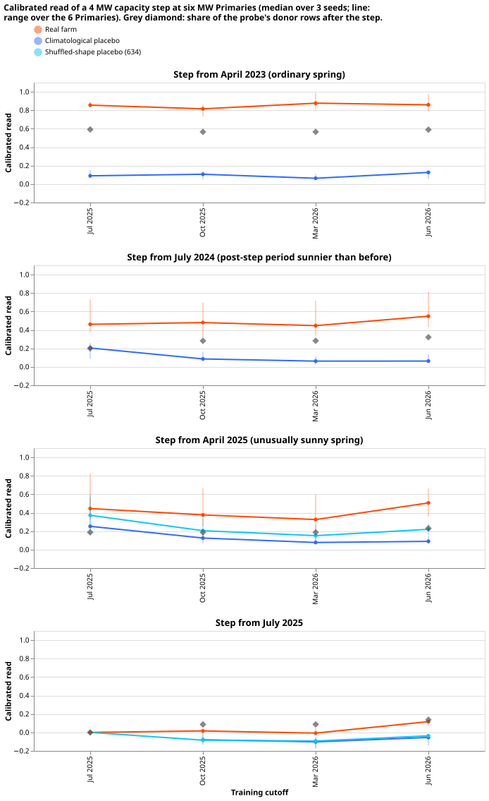
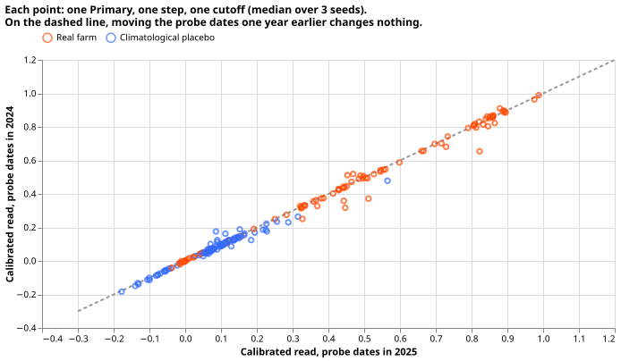

Why the PV probe missed a capacity step: mostly the sunny spring, not a limit of the probe
We tested a method that estimates how much solar capacity a demand-forecasting neural network has learned, by feeding the network different weather and measuring how its forecast changes (the probe). The question was whether the probe can follow a rise in solar capacity that starts partway through the training years. We make the rise synthetic: we add the recorded output of a real solar farm, scaled to 4 MW, to the demand that the network trains on at six Primary substations metered in megawatts, from a chosen start date. In an earlier experiment, 634, a rise starting in April 2025 was found at 0.32 to 0.49 of its added size, and a placebo (an addition with a shuffled shape) was found at about half of that. This experiment asked whether the failure came from the unusually sunny spring of 2025, or from a limit that holds in any year. A rise starting in April 2023 was found at 0.82 to 0.88 of its size. A placebo with no link to the sky of any date was found at 0.20 to 0.36 of the real rise's read at the three later training cutoffs. The sunny spring and the small fraction (0.19 to 0.23) of the training rows after the April 2025 start therefore explain most of experiment 634's failure. The probe reads a real rise higher than a linear regression on the physics curve and the temperature would, and we did not find why. The hypothesis is partly supported.

Definitions
- Step: a real solar farm's output (4 MW of its capacity) added to the demand target of the six
MW Primaries from a start date to the end of the training data, as in experiment 634. Names:
spring23(from 2023-04-01),summer24(2024-07-01),spring25(2025-04-01), andsummer25(2025-07-01). - Climatological placebo: the same injection with the farm's mean output per day of the year and half-hour over all years before July 2026, smoothed over 7 days either side. It has the farm's seasonal and daily shape and almost no information about any one date's weather (one date moves its own profile value by under 2%). Its energy after each start is 0.93 to 1.10 of the real farm's.
- Calibrated read, cutoff, and donor rows: as in experiment 634. The calibrated read is
the probed capacity of the injected network minus its control's, divided by 4 MW and by the
leave-one-farm-out factor of 0.67 to 0.69. The control, constant-injection,
spring25,summer25, and shuffled-placebo networks are experiment 634's, unretrained. - Clearness: measured over clear-sky shortwave irradiance, 10:00 to 15:00 UTC.
- Share: the fraction of the probe's donor rows dated after the step's start.
- Previous-year base: every probe date moved 364 days earlier.
Results
The ordinary-spring step is tracked, and the placebo of the sunny spring-2025 step reads about a third of the real step. Experiment 634 set a step bar: a calibrated read of at least 0.70 of the step's size.
| Step | Share | Clearness after minus before | Real step, calibrated read (four cutoffs) | Climatological placebo |
|---|---|---|---|---|
spring23 (ordinary spring) |
0.57 to 0.59 | 0.004 to 0.021 | 0.86, 0.82, 0.88, 0.86 | 0.09, 0.09, 0.07, 0.12 |
summer24 |
0.20 to 0.32 | 0.023 to 0.090 | 0.47, 0.47, 0.45, 0.55 | 0.21, 0.09, 0.07, 0.07 |
spring25 (sunny spring) |
0.19 to 0.23 | 0.049 to 0.100 | 0.43, 0.38, 0.32, 0.49 | 0.28, 0.14, 0.08, 0.10 |
summer25 |
0.00 to 0.14 | -0.052 to 0.012 | 0.00, 0.02, 0.00, 0.11 | none, -0.08, -0.11, -0.05 |
- The stop rule did not fire. The spring-2025 placebo reads 0.36, 0.25, and 0.20 of the real step at 2025-10, 2026-03, and 2026-06 (a ratio of medians over six Primaries and three seeds), below the 0.5 that stops the experiment. At 2025-07, with six probe dates, the ratio is 0.64.
- The placebo bar holds for
spring23and forspring25at the three later cutoffs. Reads are at most 0.14, below 0.15. At 2025-07 thespring25placebo reads 0.28 and thesummer24placebo 0.21, so the bar fails there. The 95th percentile of the placebo's absolute raw read over all networks is 0.48 to 0.62 MW at the laterspring25cutoffs, against 0.74 to 0.93 MW for the shuffled placebo and a noise floor of 0.244 MW. - The
spring23step reads above its donor share, so prediction (2) fails on the high side. The read is 0.82 to 0.88 and the share 0.57 to 0.59, a difference of 0.23 to 0.31, against a predicted at most 0.2. The step bar of 0.70 is passed, at all four cutoffs. - The
summer24step is read at 0.45 to 0.55, above its share of 0.20 to 0.32. Thesummer25step is read at 0.00 to 0.11, as experiment 634 found, with a clearness difference of about -0.05. A step's read rises with its share, and the sunny-spring clearness difference adds only the amount that the placebo already reads. - The widened 80% interval is too narrow for these reads. It contains the share for 0% to 22%
of the 18 real
spring23andspring25networks at each cutoff. It covers zero for 0% to 44% of the climatological placebo networks. Experiment 634's page states that its intervals understate the spread between farms, so the intervals are not used for any claim here.

Moving the probe dates a year earlier changes the median read by at most 0.05, except at
2025-07.
The change is at most 0.01 at the other cutoffs for the real steps of spring23, spring25, and
summer24. At 2025-07 (six probe dates) the real spring25 read falls from 0.43 to 0.33 and its
climatological placebo from 0.28 to 0.22. The networks do not use the date of the base row.
The read compared with a date-blind regression
A linear regression of the injected megawatts on the physics unit curve and the temperature, over the probe's own cells, gives the raw read of a learner that cannot tell the date. The networks read more than that.
| Step and shape | Regression (raw, per injected MW) | Networks (raw), four cutoffs |
|---|---|---|
spring23, real |
0.39 to 0.42 | 0.57 to 0.59 |
spring23, placebo |
-0.04 to -0.01 | 0.04 to 0.09 |
spring25, real |
0.12 to 0.18 | 0.22 to 0.35 |
spring25, placebo |
0.00 to 0.06 | 0.05 to 0.17 |
summer24, real |
0.19 to 0.25 | 0.30 to 0.38 |
- The donor share was the wrong yardstick. The regression gives 0.39 to 0.42 raw for
spring23, which is 0.57 to 0.62 after the factor of 0.68, about the share. The network's 0.86 is about 1.45 times that. - The remaining excess is 0.1 to 0.2 raw for a real step and 0.05 to 0.1 for a placebo, and we did not find its cause. One untested candidate is that the network reads weekday, holiday, or pandemic columns of the input that differ between the step's years. The previous-year base shows the networks do not read the base row's date. The unexplained excess is the reason the verdict is not "supported".
Deviations from the plan
- The sunny-summer step that the follow-up brief asked for could not be built from a sunny
summer. No July to September in
the data has clearness above 0.63, so
summer24stands in: its post-step period is sunnier than its pre-step period by 0.02 to 0.09. - The plan's coverage bar and the full-step reference were replaced before any fit (reviewer
finding): coverage is judged against the share and zero, and the
summer25base dates partly precede the step. - Prediction (2) failed (above), and the decision rule read strictly gives "inconclusive" because the sunny-year support rule needs prediction (2). The verdict "partly supported" rests on prediction (1), the stop rule, and the ordinary-spring read.
Checks
- Median forecast minus mean forecast, per site: not applicable, because no forecast is scored.
- Error of the mean or median forecast beside every quantile-score contrast: not applicable.
- Triggers that fired: prediction (2) contradicted its result. The session tested one explanation (the yardstick, above) and recorded the unexplained remainder. No audit was run; the page therefore makes no claim that depends on the remainder.
- Review: a fresh Sonnet agent reviewed the plan and code before any fit. Its findings on the coverage bar, prediction (4), the decision rule, the stop-rule floor, the figures in prediction (2), and the unused noise-floor bar were accepted and applied before the fits. Its note that the profile contains a little of each date's own weather was accepted and stated in the definitions.
Method
- The scripts
e00638_fit.py,e00638_probe.py,e00638_analyse.py,e00638_oracle.py, ande00638_report.pyimport the modules of experiment 634 and, through them, experiments 397, 405, 409, 428, 448, 510, 554, 621, and 623, and edit none of them. Farm gaps drop the same rows from every arm. The 69 fits took about 0.6 GPU-hours. - The shuffled-placebo reads in the figure are experiment 634's.
What the next experiment should answer
The excess of the networks over a date-blind regression is the open question: a step that starts in an ordinary spring and ends after one year, and a network whose weekday, holiday, and pandemic columns are held at fixed values, would show whether the weekday, holiday, and pandemic columns carry the excess.